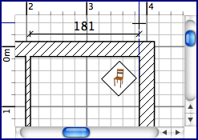
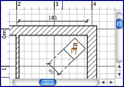

Rozmìry do projektu nakreslíte buï prostøednictvím menu Plán > Vytvoøit rozmìry nebo vyberte ikonu Nakreslit rozmìry v plánu.
Ikona Nakreslit rozmìry v plánu
Ka¾dý rozmìr nakreslíte tøemi kliknutími v plánu projektu :
- prvním kliknutím vytvoøíte poèáteèní bod nového rozmìru,
- druhým kliknutím koneèný bod rozmìru,
- tøetím kliknutím potvrdíte umístìní rozmìrù v plánu projektu. V pøípadì, ¾e jste mezi druhým a tøetím kliknutím nehýbali my¹í, bude vzdálenost rozmìru od mìøeného objektu nulová.
Tvorbu rozmìru mù¾ete kdykoli ukonèit stisknutím klávesy Escape.
V jiném pøípadì, mù¾ete pohybem my¹i, mezi druhým a tøetím kliknutím, mìnit vzdálenost a umístìní rozmìru od mìøeného objektu v plánu.
|  |
 |
Vytvoøení rozmìrù
bez èar vzdálenosti.
|
Vytváøení rozmìru
s èarami vzdálenosti
|
Kreslení rozmìrù ukonèíte prostøednictvím menuPlán > Vybrat nebo kliknìte na ikonu Vybrat.
 IkonaVybrat IkonaVybrat
|